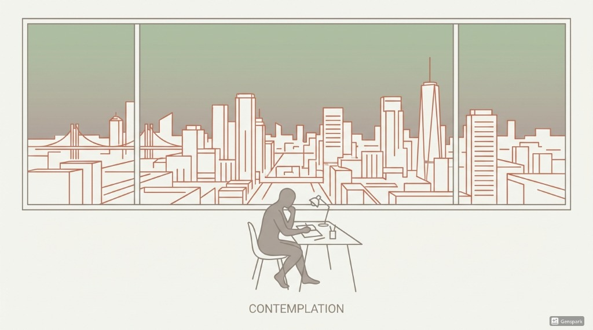
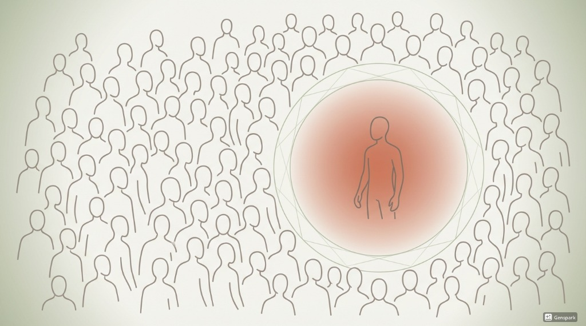
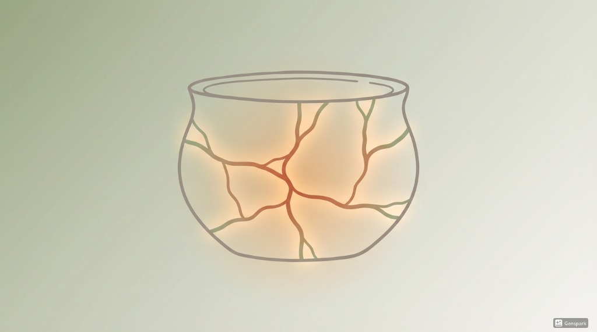
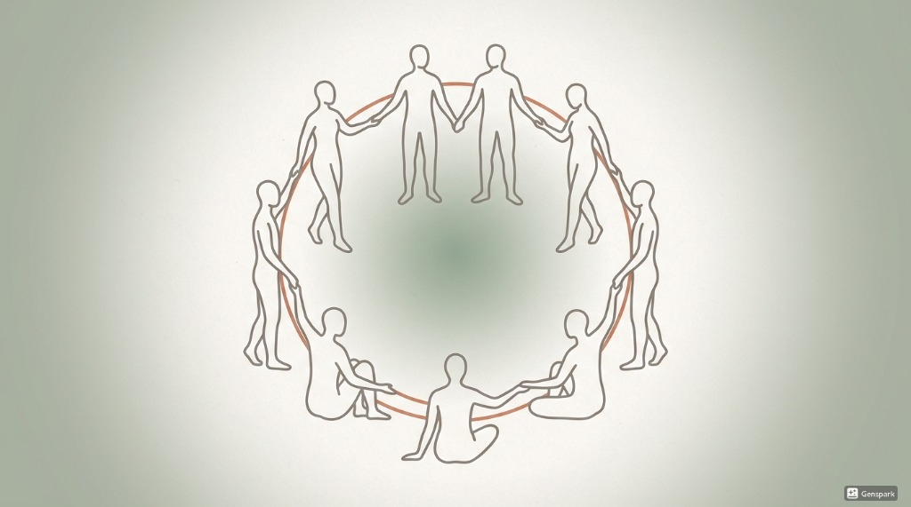
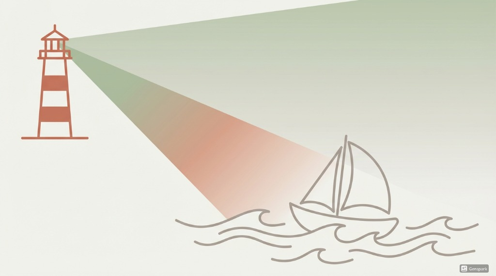
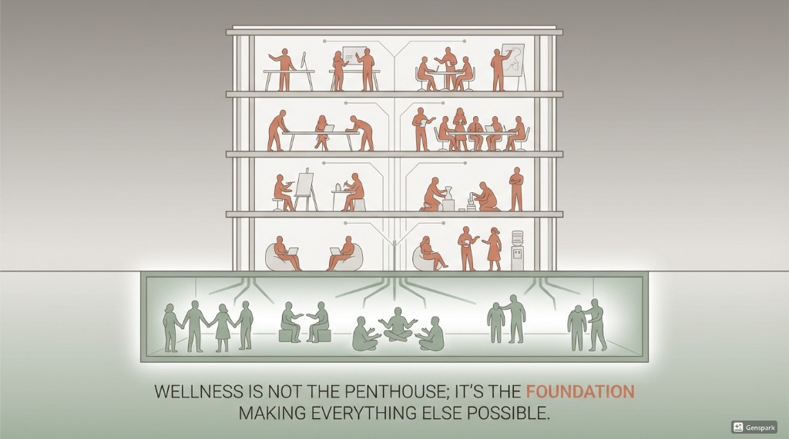
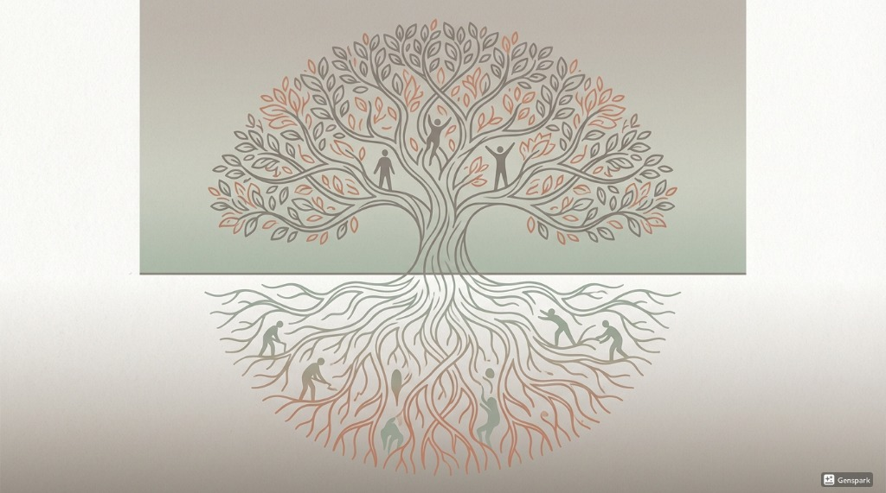

Project Wendy
Mental Wellness Infrastructure
for India's Founders
Building the emotional infrastructure India's startup ecosystem is missing.
The Reality
Building at speed,
breaking the builders.
India's startup ecosystem has learned to build companies at speed.
It has not learned to take care of the humans building them.
"The pressure is constant. The stakes are existential. The weight compounds daily."
FOUNDER WELLNESS CRISIS


The Invisible Cage
You are not alone
in feeling alone.
Loneliness despite constant interaction
Chronic anxiety beneath outward success
Identity collapse when the company struggles
The belief that vulnerability equals weakness
Imposter syndrome mixed with messiah complex
This is not a fringe issue. It is structural.
The ecosystem extracts extraordinary effort without offering the emotional infrastructure to sustain it.
The Solution
Wellness as Shared Infrastructure,
not a Private Burden.
Content
Stories that create permission to be human. Making vulnerability visible through YouTube, podcasts, and essays.
Community
Founder Forums: Small, facilitated peer circles where you can stop performing and start processing in psychological safety.
Care
Access to therapists who understand identity fusion, prolonged uncertainty, and founder psychology.
Wendy exists to change the structural default of the ecosystem.
Pillar 1: Content
Make Vulnerability
Visible
Stories that create permission to be human.
YouTube
Podcasts
Essays
Goal: Normalize emotional literacy; shift culture from performance to processing.
SHARED INFRASTRUCTURE


Community
Founder Forums
Circles of shared truth.
Small, consistent circles of founders meeting regularly in confidential, facilitated settings.
Psychological safety to stop performing
Shared truth without judgment
Continuity of care and support
This isn't just networking.
It's a place where founders can stop performing and start processing the reality of building.
The Solution: Care
Support that understands
your reality.
Access to therapists trained in the specific psychology of entrepreneurship.
Identity fusion
When you are the company
Prolonged uncertainty & decision fatigue
Performance pressure & visibility
Isolation despite being surrounded by people
The weight of other people's livelihoods
PROFESSIONAL CARE INFRASTRUCTURE

The Missing Layer
Emotional Infrastructure

Wellness is not the penthouse; it's the foundation.
Peer forums and clinical care underpin execution, strategy, and leadership.
Build the basement first—support flows
upward.
The Ecosystem Vision
An Ecosystem Where Emotional Resilience Is Infrastructure

The Roots
Emotional Literacy & Support
The Canopy
Sustainable Growth & Success
Normalized
Peer forums are as standard as board meetings.
Leadership
Seeking support is seen as strength, not weakness.
Advantage
Emotional literacy becomes a competitive edge.
Join Us
Help build the missing
social infrastructure.
This is not a request to fund a program.
It is an invitation to create an ecosystem where seeking support is leadership, not weakness.
arihant@gmail.com
+91 98109 69090
Project Wendy